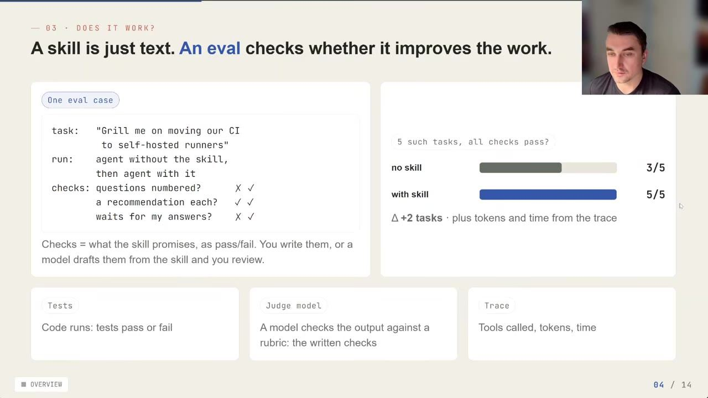
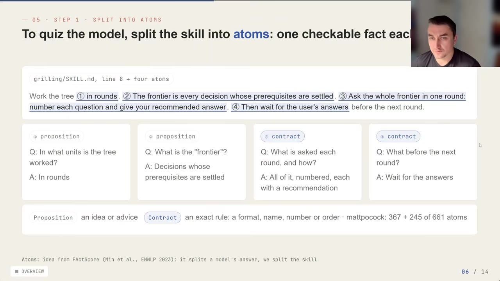
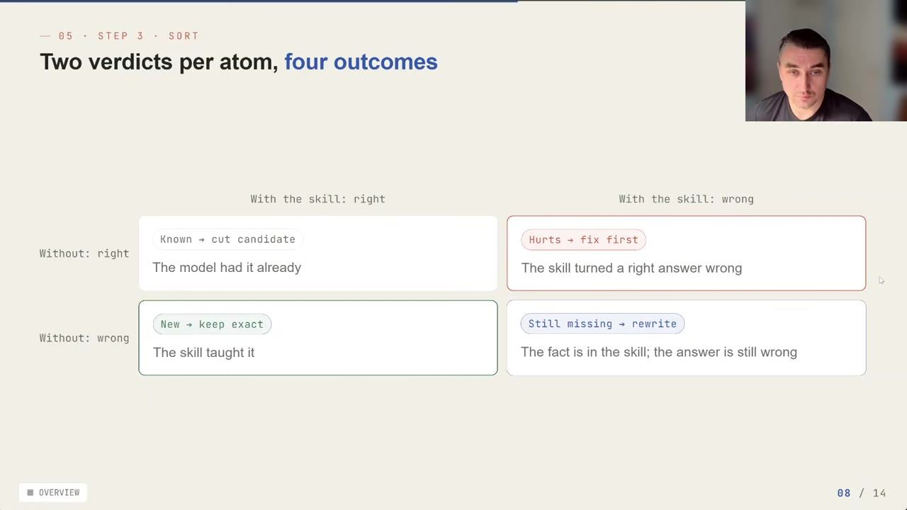
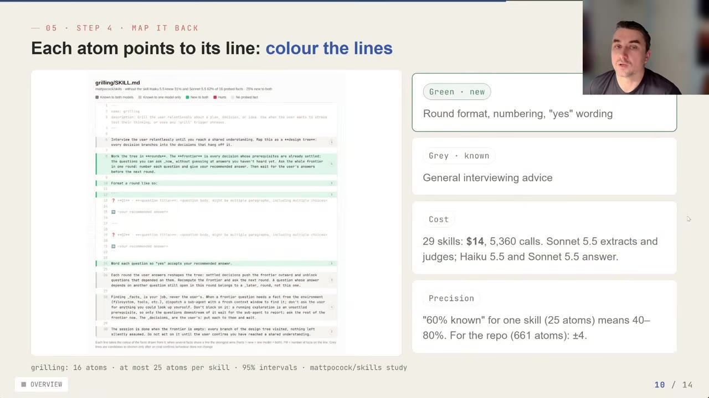
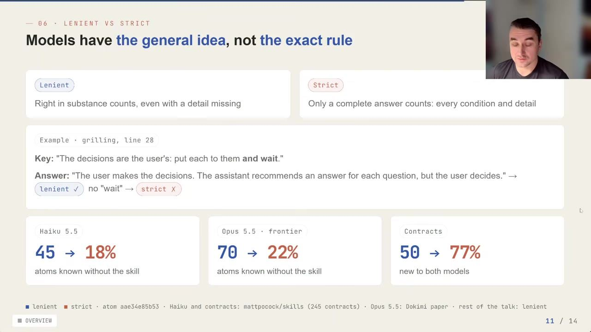

essencial do dia: Ensina um método que você aplica hoje: quebrar a skill em afirmações e testar com e sem cada uma para cortar o que o modelo já sabe.
Como medir o que sua skill ensina de novo ao modelo
Your SKILL.md Is 70% Stuff the Model Already Knows
Divida a skill em afirmações pequenas e teste o modelo com e sem cada uma. Só assim você vê o que ela ensina e o que o modelo já sabia.
Depois deste talk você consegue dividir uma skill em itens verificáveis e classificar o que o modelo já sabia, o que aprendeu e o que piorou
Em 3 frases
Skills costumam só crescer, porque acrescentar uma linha é fácil e remover dá medo. Petrov propõe quebrar a skill em 25 a 30 itens, cada um com pergunta e resposta esperada.
Cada item roda em dois braços, sem skill e com skill, e um juiz de outra família de modelos avalia as respostas. O resultado cai em quatro grupos: já sabia, piorou, aprendeu e continua sem saber.
O modelo entende bem a ideia geral, mas erra os detalhes exatos. O valor da skill está nesses detalhes, e a medição de novidade é só um ponto de partida que precisa ser confirmado com evals.
Antes de ler
- Skill habilidade, julgamento institucional escrito para o agente executar analogia no glossário
- Eval avaliação analogia no glossário
- Ablation study estudo de ablação, que testa uma variável por vez analogia no glossário
- LLM-as-a-judge modelo de linguagem usado para avaliar respostas analogia no glossário
- Contexto do agente informação disponível ao agente a cada tarefa analogia no glossário
- Token pedaço de texto que o modelo lê e gera analogia no glossário
Mais 1 termo
Eval com dois braços
O teste básico de uma skill roda a mesma tarefa em dois braços, sem skill e com skill. No exemplo, o modelo resolve 3 de 5 sem a skill e 5 de 5 com ela. Também vale comparar uso de tokens e tempo, não só acertos.


(ampliar imagem)Quebrar a skill em átomos
Em vez de editar linha por linha na sorte, a skill vira uma lista de 25 a 30 itens, no estilo do FactScore. Cada item tem uma pergunta e a resposta esperada. Pode ser uma ideia geral ou um contrato com expectativa mais definida.


(ampliar imagem)As quatro saídas do teste
A matriz cruza acertar sem skill e acertar com skill. Acerta nos dois: a skill não acrescenta nada. Acerta só sem skill: a skill atrapalha. Acerta só com skill: ela ensinou algo novo. Erra nos dois: a skill está mal escrita ou incompleta.


(ampliar imagem)Mais 2 ideias deste talk
Mapa de cor da skill
O resultado pode colorir o arquivo da skill, linha a linha ou até frase a frase, mostrando o que é novidade e o que o modelo já sabia. As linhas que pioram o desempenho são as mais fáceis de corrigir. Nas skills populares da Anthropic elas são raras.


(ampliar imagem)Ideia geral versus detalhe exato
A checagem branda aceita a ideia geral e a estrita exige chaves, parâmetros e valores exatos. Nos modelos grandes a diferença é enorme. Isso explica por que cortar os detalhes parece seguro e custa caro: são eles que o modelo não sabe.


(ampliar imagem)O talk vem da Intel e apresenta uma ferramenta própria de comparação de contexto, sem repositório ou dados abertos citados. As amostras são pequenas: 29 skills, três wrappers públicos e um juiz da família Sonnet. O próprio palestrante diz que a medição de novidade é só um sinal inicial. Não há evidência de que remover o que o modelo já sabe preserva o desempenho. Conhecimento prévio também varia por modelo e por versão.
Teste você mesmo
Responda de cabeça antes de abrir. Lembrar com esforço é o que fixa.
- lembrar Quais são as quatro saídas possíveis ao testar um item da skill com e sem a skill?
Ver resposta
O modelo acerta nos dois casos (a skill não muda nada), acerta só sem skill (a skill atrapalha), acerta só com skill (ensinou algo novo) ou erra nos dois (a skill está falha ou incompleta).
- aplicar Você tem um SKILL.md de 300 linhas que ninguém ousa encurtar. Como decidir o que cortar com segurança?
Ver resposta
Divida a skill em itens com pergunta e resposta, rode sem e com a skill com um juiz de outra família, corte o que o modelo já sabia e rode o eval de tarefas para confirmar que a nota se mantém.
- criticar Por que o resultado de novidade não basta para justificar a remoção de trechos de uma skill?
Ver resposta
Ele só indica o que o modelo já sabe, num teste de perguntas. Remover trechos pode piorar tarefas reais, e o palestrante afirma que é preciso validar com evals. A amostra é pequena e a ferramenta é da própria empresa.
Mapa de novidade de uma skill sua
Você precisa de: Uma skill ou arquivo de instruções seu, acesso ao Claude ou ChatGPT e uma planilha
- Peça a um modelo para extrair do SKILL.md 15 afirmações verificáveis, cada uma com pergunta e resposta esperada.
- Faça cada pergunta em uma conversa nova sem a skill e anote se a resposta bate com o gabarito.
- Repita as perguntas com a skill colada no contexto e anote de novo.
- Classifique cada item em já sabia, piorou, aprendeu ou continua sem saber e conte quantos há de cada.
Deu certo se: Você tem uma tabela com 15 itens classificados e identifica pelo menos um trecho candidato a corte e um detalhe que a skill precisa manter.
O que fazer com isso
- Escolha uma skill sua e escreva 15 afirmações verificáveis, cada uma com uma pergunta e a resposta esperada.
- Rode as perguntas em um modelo sem a skill e com a skill, e classifique cada item nas quatro saídas.
- Use um modelo de outra família como juiz e confira se a pergunta não entrega a resposta.
- Remova os itens que o modelo já sabia, rode seu eval de novo e compare a nota e o uso de tokens.
Conversa com outros talks
- aprofunda Por que ler uma skill não revela o que ela faz · O talk anterior mostrou que ler a skill não revela o efeito dela; este dá o método de ablação por afirmação para medir esse efeito.
- Evitar que um conserto de agente quebre outro · 25 out · em comum: Agent skills, Baseline, Eval
- Como a Ramp testa um agente contábil antes dos clientes · 8 nov · em comum: Ablation study, Eval, Skill
- Fábricas de software com agentes e a montanha de lixo · 24 nov · em comum: Contexto do agente, Token